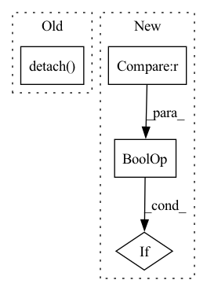

Pattern ID :25986
Before Change
h1 = Hvp_vec(grad_vec=grad_x, params=y_params, vec=lr_x * x, retain_graph=True).mul_(lr_y)
h2 = Hvp_vec(grad_vec=grad_y, params=x_params, vec=h1, retain_graph=True).mul_(lr_x)
Avx = x + h2
r = b.clone().detach() - Avx
if nsteps is None:
nsteps = b.shape[0]After Change
beta = new_rdotr / rdotr
p = r + beta * p
rdotr = new_rdotr
if rdotr < residual_tol or rdotr < atol :
break
if i > 100:
warnings.warn("CG iter num: %d" % (i + 1))In pattern: SUPERPATTERN
Frequency: 3
Non-data size: 4
Instances Fragment ID: 78475341
Project Name: devzhk/cgds-package
Commit Name: 561b04700598e2b8483e7279c767c4159640b0a2
Time: 2020-12-15
Author: devzhk@gmail.com
File Name: CGDs/cgd_utils.py
M Class Name: AnonimousClass
N Class Name: AnonimousClass
M Method Name: general_conjugate_gradient(12)
N Method Name: general_conjugate_gradient(12)
M Parent Class:
N Parent Class:
M File Name: CGDs/cgd_utils.py
N File Name: CGDs/cgd_utils.py
M Start Line: 107
M End Line: 143
N Start Line: 115
N End Line: 156
Before Change
- torch.sum(self.log_scale + 0.5 * torch.pow((z - self.loc) / torch.exp(self.log_scale), 2), 1)
acc = self.a(z)
if self.Z == None:
self.Z = torch.mean(acc).detach()
alpha = (1 - self.Z) ** (self.T - 1)
log_p = torch.log((1 - alpha) * acc[:, 0] / self.Z + alpha) + log_p_gauss
return z, log_p
After Change
log_p_gauss = - 0.5 * self.d * np.log(2 * np.pi) \
- torch.sum(self.log_scale + 0.5 * torch.pow((z - self.loc) / torch.exp(self.log_scale), 2), 1)
acc = self.a(z)
if self.training or self.Z == None :
Z_batch = Z_batch / n
if self.Z == None:
self.Z = Z_batch Fragment ID: 78475336
Project Name: vincentstimper/normalizing-flows
Commit Name: 9aff267fc03712f6c0b102df9c74b34fa1301015
Time: 2020-08-13
Author: vincent.stimper@gmail.com
File Name: normflow/distributions.py
M Class Name: ResampledGaussian
N Class Name: ResampledGaussian
M Method Name: forward(2)
N Method Name: forward(2)
M Parent Class: BaseDistribution
N Parent Class: BaseDistribution
M File Name: normflow/distributions.py
N File Name: normflow/distributions.py
M Start Line: 109
M End Line: 112
N Start Line: 91
N End Line: 122
Before Change
res = a2a(_input).wait()
res.backward(res)
assert_array_equal(
res.cpu().detach() ,
output.cpu().detach(),
)
assert_array_equal(After Change
atol, rtol = None, None
if qcomms_config is not None:
atol, rtol = 0.01, 0.01
if (
qcomms_config.forward_precision == CommType.FP8
or qcomms_config.backward_precision == CommType.FP8
) :
atol, rtol = 0.05, 0.05
torch.testing.assert_close(res, output, rtol=rtol, atol=atol) Fragment ID: 78475322
Project Name: facebookresearch/torchrec
Commit Name: fdb901e2becf3de3339370cdae3333956f644fa0
Time: 2022-07-27
Author: yingliufb@fb.com
File Name: torchrec/distributed/tests/test_dist_data.py
M Class Name: PooledEmbeddingsAllToAllTest
N Class Name: PooledEmbeddingsAllToAllTest
M Method Name: _run_test_dist(9)
N Method Name: _run_test_dist(8)
M Parent Class: MultiProcessTestBase
N Parent Class: MultiProcessTestBase
M File Name: torchrec/distributed/tests/test_dist_data.py
N File Name: torchrec/distributed/tests/test_dist_data.py
M Start Line: 309
M End Line: 327
N Start Line: 306
N End Line: 346